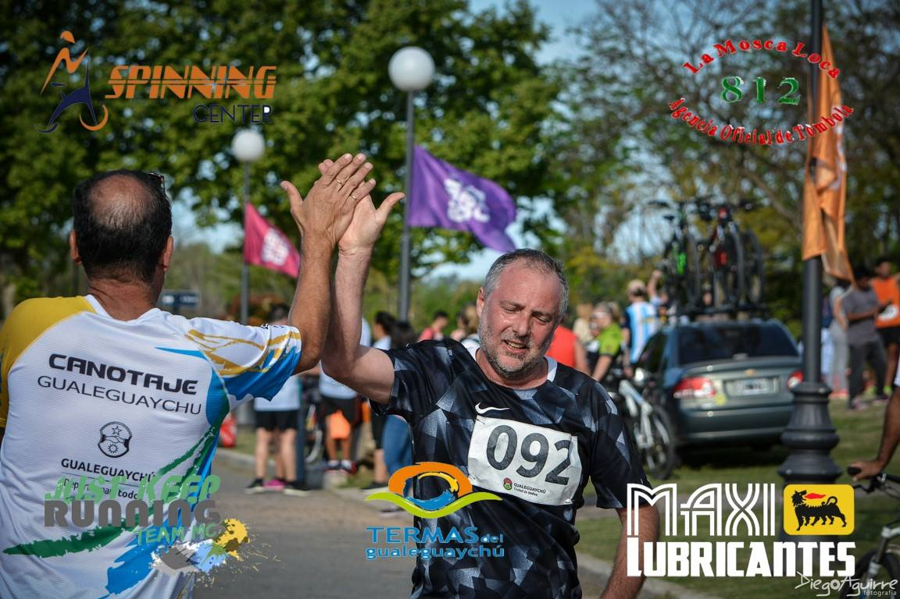
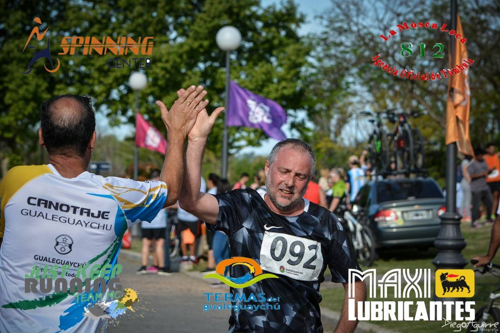

El club fue fundado el 5 de mayo del año 1958 por un grupo de personas con el fin de desarrollar deportes náuticos.
La década del 60 fue fructífera en organización de competencias de natación en aguas abiertas y en carreras de canoas.
En los 70 hasta principios de la década de los 80 pasó a tener un carácter más social con la concurrencia de la masa societaria a la playa, con la construcción de una cancha de bochas y una cancha de volley al aire libre que convocaba a un número importante de jóvenes.
Los años 90 y principios de 2000 hubo un marcado desinterés en general por apoyar y trabajar en el club, dando como resultado falta de dirigentes y socios. Hasta que en el 2008 un grupo de deportistas amateurs que entrenaban en el parque Unzué, decidieron asociarse y tramitaron ante las autoridades competentes la regularización de la institución. Al mismo tiempo se sumaron un grupo de entusiastas kayakistas de la ciudad que ya estaban desarrollando esa actividad deportiva a nivel provincial.
En la actualidad, el Club Regatas Gualeguaychú es una institución de puertas abiertas a toda la comunidad y cuenta con una reconocida trayectoria deportiva con logros nacionales e internacionales.


Todos los meses de mayo, y en conmemoración al aniversario del club, Kayakistas Gualeguaychú organiza las "bajadas del río Gualeguaychú" que son travesias a ritmo de paseo por el río Gualeguaychú y sus afluentes, haciendo de esos paseos una aventura de camaradería y safari fotográfico de la flora y fauna de nuestros ríos. Dichas travesias culminan en nuestro club, acompañados por un gran número de gente que se les suma en los últimos kilómetros y finaliza con una chocolatada y anécdotas del viaje.

Todos los años organizamos un campeonato denominado TRIA AVENTURA que consta de 6 fechas, en el que se puede participar de forma individual o por postas de 3 personas.
Las disciplinas son kayak, MTB y pedestrismo. Las distancias son cortas, pretendiendo que esta prueba sea tomada como desafío personal para las cientos de personas que diariamente entrenan en el parque Unzué.

Esta carrera es organizada por nuestro club junto a el Municipio y la Facultad de Bromatología UNER.
Las disciplinas son MTB (18km) y pedestrismo (4 y 8km).

 
